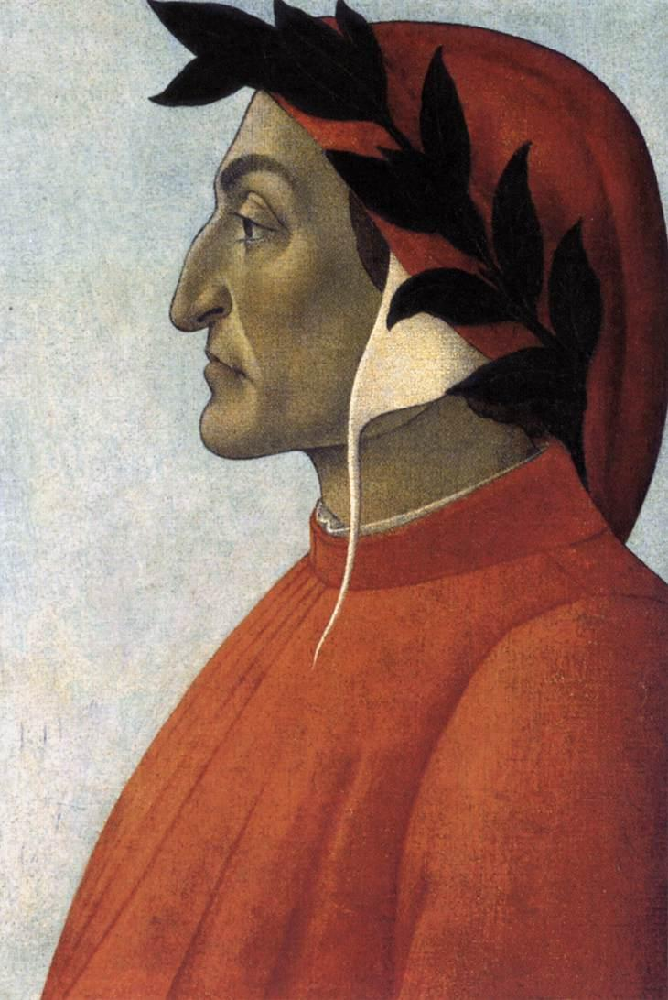
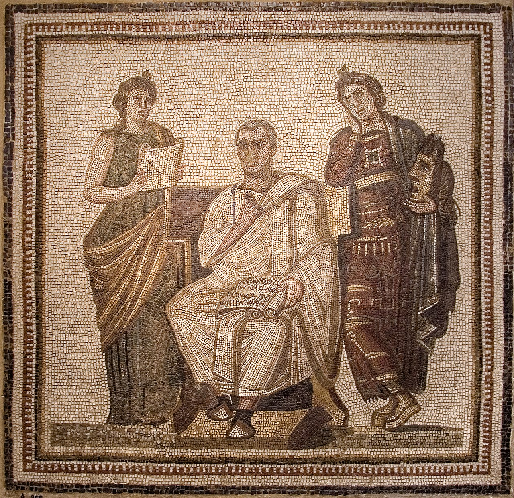
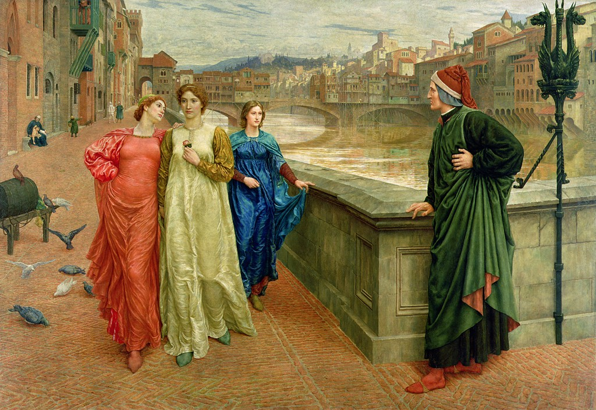
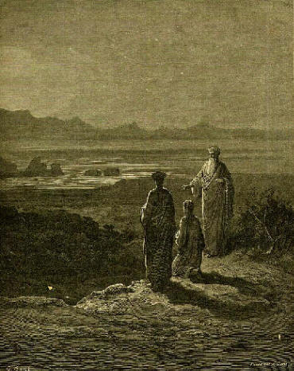
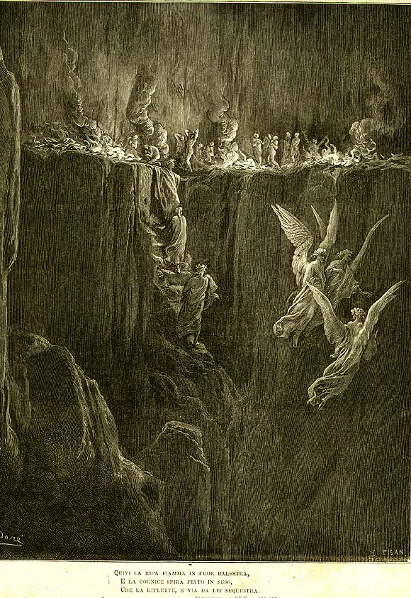

Божественная комедия: Чистилище
краткий разбор по песням
«Божественная комедия» (ок. 1308–1321) — поэма Данте Алигьери в трёх кантиках («Ад», «Чистилище», «Рай»), написанная терцинами. «Чистилище» (Purgatorio) — вторая кантика, 33 песни. Выйдя из преисподней, Данте под водительством римского поэта Вергилия восходит по горе Чистилища — единственной суше посреди океана Южного полушария, вознёсшейся при падении Люцифера. На семи уступах-кругах горы души искупают семь смертных грехов и, очистившись, поднимаются к Земному раю на вершине.
В отличие от вечного Ада, кара здесь временна и желанна: душа сама стремится очиститься. Поэтому тон кантики — надежда: восход, утренние звёзды, движение вверх. Каждый из трёх «потусторонних» рассказов поэмы кончается словом «звёзды» (stelle).
Композиция
I Предчистилище Песни 1–9
Берег и склоны горы: поздно раскаявшиеся, отлучённые от Церкви, нерадивые государи — и врата собственно Чистилища с тремя ступенями исповеди.
II Семь кругов горы Песни 10–27
Семь уступов, где искупаются смертные грехи — от гордыни внизу до сладострастия у вершины: гордыня, зависть, гнев, уныние, скупость, чревоугодие, похоть. На каждом ангел стирает со лба Данте одно «P».
- 10Круг 1: Гордыня. Барельефы смирения
- 11Гордыня: «Отче наш». Тщета славы
- 12Гордыня: образцы кары. Первое «P» стёрто
- 13Круг 2: Зависть. Зашитые веки
- 14Зависть: упадок Романьи
- 15Зависть → Гнев. Благо, что множится в раздаче
- 16Круг 3: Гнев. Свобода воли
- 17Гнев → Уныние. Любовь — двигатель всего
- 18Уныние: природа любви. Бег нерадивых
- 19Сон о сирене. Круг 5: Скупость
- 20Скупость: гимн бедности. Дрожь горы
- 21Стаций. Отчего дрожит гора
- 22Обращение Стация. Круг 6: Чревоугодие
- 23Чревоугодие: иссохшие лица. Форезе
- 24Чревоугодие: «сладостный новый стиль»
- 25Рождение души. Круг 7: Сладострастие
- 26Сладострастие: поэты в огне
- 27Огненная стена. Прощание Вергилия
III Земной рай Песни 28–33
Эдемский лес на вершине: дева Мательда, мистическая процессия, явление Беатриче, исповедь Данте и реки Лета (забвение зла) и Эвноэ (память о добре).
Действующие лица

Сандро Боттичелли. Портрет Данте (ок. 1495). Общественное достояние Данте. Паломник по загробью и автор поэмы; на горе очищается и сам.
Вергилий между музами Клио и Мельпоменой. Римская мозаика из Хадрумета (нач. III в. н. э.), Музей Бардо, Тунис. Общественное достояние Вергилий. Тень римского поэта, проводник по Аду и Чистилищу; олицетворяет разум и человеческую мудрость; покидает Данте у Земного рая.
Генри Холидей. «Данте и Беатриче» (1883). Общественное достояние Беатриче. Возлюбленная Данте; является в Земном раю как проводник к Раю; олицетворяет богословие и благодать.
Гюстав Доре. Катон — страж Чистилища (1868). Общественное достояние Катон Утический. Суровый языческий праведник, страж подножия Чистилища.
Гюстав Доре. Стаций (к «Чистилищу», 1868). Общественное достояние Стаций. Римский поэт, только что завершивший очищение; тайный христианин, обращённый Вергилием; спутник Данте с 21-й песни.- Мательда. Прекрасная дева Земного рая; ведёт Данте к рекам Лета и Эвноэ.
- Ангелы-хранители кругов. На каждом уступе стирают со лба Данте одно «P» (peccatum, грех) и поют соответствующую заповедь блаженства.
Сквозные темы
- Покаяние и очищение. Кара здесь не вечна, а желанна: душа сама стремится искупить грех и взойти выше.
- Надежда и рассвет. Восход, утро, звёзды и движение вверх противопоставлены вечной ночи Ада.
- Любовь как корень всего. Срединные песни (16–18): всякое действие движимо любовью; семь грехов — это любовь извращённая, недостаточная или чрезмерная.
- Свобода воли. Зло не от звёзд, а от свободного выбора человека (речь Марко Ломбардо); человек сам в ответе.
- Время, труд и молитва. В Чистилище есть время: ночью вверх не подняться, а молитвы живых сокращают срок душам.
- Искусство и поэзия. Череда встреч с поэтами и художниками (Каселла, Одеризи, Бонаджунта, Гвиницелли, Арнаут, Стаций) и манифест «сладостного нового стиля».
- Политика и Церковь. Инвективы о раздробленной Италии (песнь 6) и о порче Церкви (финальная процессия).